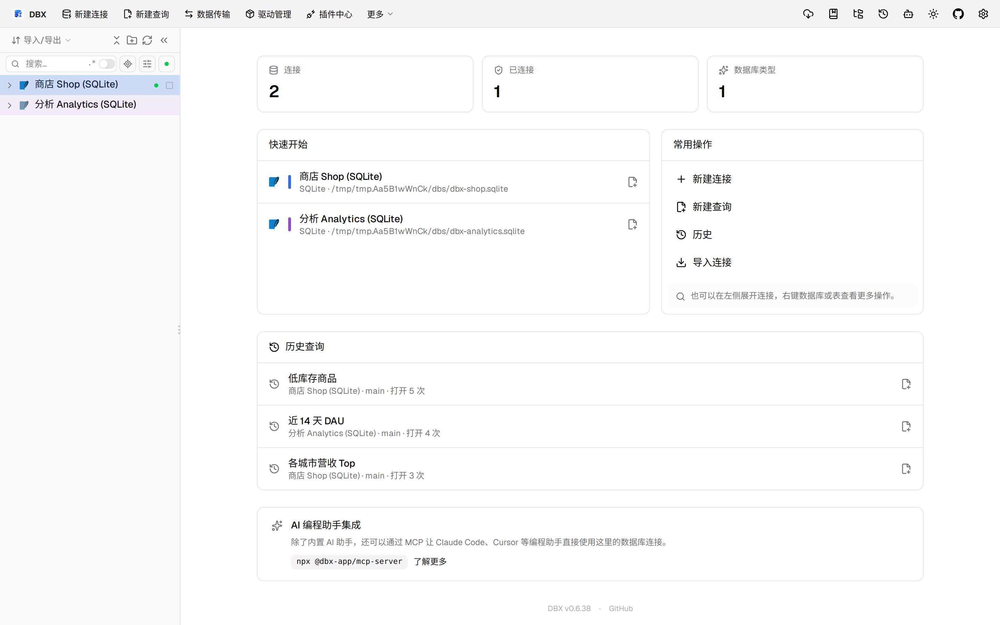

#11584 界面预览
commit 65a1a56 · 回到 PR · 这个 PR 修复了结构编辑器里在“字段/列”与其他结构页签之间切换后，横向滚动条会丢失、并且列区横向滚动位置无法恢复的问题。它还在列虚拟列表更新时主动刷新横向滚动条状态，以保证页签切回后界面能继续正确显示滚动条。
⚠️ 这次录制有 7 步没能按计划执行；带 ⚠️ 的截图拍摄于步骤失败之后，画面未必是说明文字所描述的状态。
红线是鼠标走过的轨迹，红色圆环是一次点击；底部文字是这一步在做什么。多个场景各自从应用初始状态开始。空格暂停，← → 逐段查看。
 ⚠️ 结构页签切换前的列滚动状态 · 打开表结构编辑器后的字段页签与横向滚动条
⚠️ 结构页签切换前的列滚动状态 · 打开表结构编辑器后的字段页签与横向滚动条

⚠️ 结构页签切换前的列滚动状态 · 切换到触发器页签后的结构面板
 ⚠️ 结构页签切换前的列滚动状态 · 切回字段页签后的横向滚动条与滚动位置
⚠️ 结构页签切换前的列滚动状态 · 切回字段页签后的横向滚动条与滚动位置